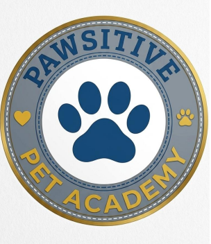

Canine Obedience Training (12 Weeks / 6-Month Programme)
Learn effective dog obedience techniques including basic commands, positive reinforcement, and behaviour modification. Fee: R1500.

Empowering Pet Owners & Animal Professionals in Durban

Founded by Sarah Smith in 2023, Pawsitive Pet Academy provides practical animal care education, obedience training, and pet business skills designed for pet owners, aspiring professionals, and animal lovers.
Learn effective dog obedience techniques including basic commands, positive reinforcement, and behaviour modification. Fee: R1500.
Essential emergency care skills covering minor injuries, CPR basics, heatstroke, and poison awareness. Fee: R750.